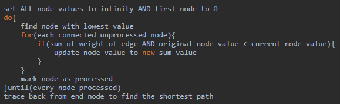

Pathfinding
DIJKSTRA'S ALGORITHM
Dijkstra's algorithm is a way of finding the shortest route through a
set of connected nodes on a graph. It works by checking every node
until the one with the lowest value is found, then adding that to the
list and repeating. The full procedure can be seen below.
Once a value is confirmed to be the
shortest route to that node, it is 'boxed', marking it as complete.
This algorithm is good at finding the fastest path, however can take
a long time, and will only consider faster options when one option becomes
too long. For example, traveling london to the Isle of White would
consider routes northbound until it became faster to go south, despite
it being in the opposite direction.
Dijkstra's Algorithm
- Label the starting vertex as zero value and box it
- Box the smallest number of those connected to this node
- From this node, consider the distance to every other node
- If the distance is less than the value already at the vertex, cross it out and replace it with the new distance
- If there is no value at this vertex, write down the value
- Repeat from step 2 until the destination is reached

Pseudocode for this algorithm is as follows:

THE A* ALGORITHM
The A* algorithm uses a heuristic (best guess) approach to find the shortest route ot a destination. Instead of checking
every possible route, it measures each node around a node and checks the distance to it. The distance is determined by its position.
Adjacent nodes are given a value of 10, and diagonals a value of 14 (this is due to pythagoras, but numbers are multiplied by 10 and rounded).
Each node has three values, a G cost - the distance from the starting node, an H cost - distance from the end node, and an F cost - G cost + H cost.
Each iteration, the node with the smallest F-cost is 'explored'. After a node has been explored, each connected node is given an F cost and the process repeats until the end is reached.

Pseudocode for this algorithm is as follows
Algorithms and Efficiency
The data protection act was established in 1998. The eight principles are as follows:
- Personal data should be obtained and processed fairly amnd lawfully
- Personal data can be held only for specified and lawful purposes
- Personal data should be adequate, relevant and not excessive for the required purpose
- Personal data should be accurate and kept up-to-date
- Personal data should not be kept for longer than is necessary
- Data must be processed in accordance with the rights of the data subject
- Appropriate security measures must be taken against unauthorised access
- Personal data cannot be transferred to countries outside the E. U. unless the country has similar legislation to the D.P.A.
The data protection act is designed to do as it states, ensure the safety of personal data. Each principle aims to keep secure data deemed personal.
This includes racial or ethnic origin, political opinions and religious beliefs, among
the obvious such as name and address. In some cases, collection
of such material may be required, for example, a Catholic school who only employs Catholics, might wish to know the religious beliefs of new teachers, while
The police
force will need to know if new recruits have any previous criminal convictions.